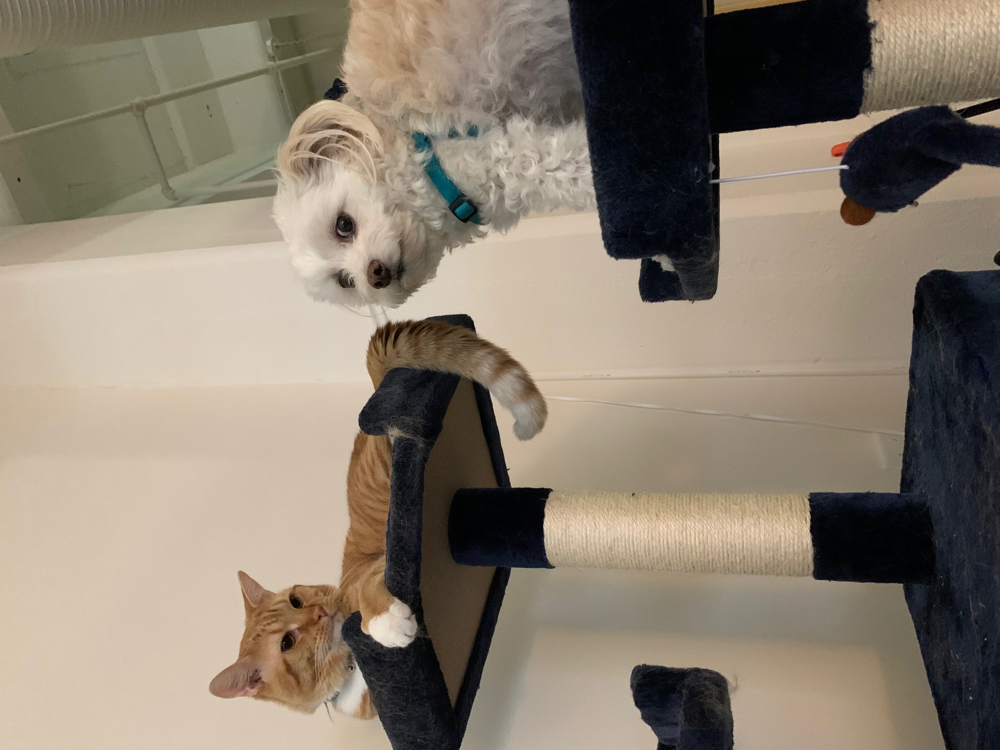
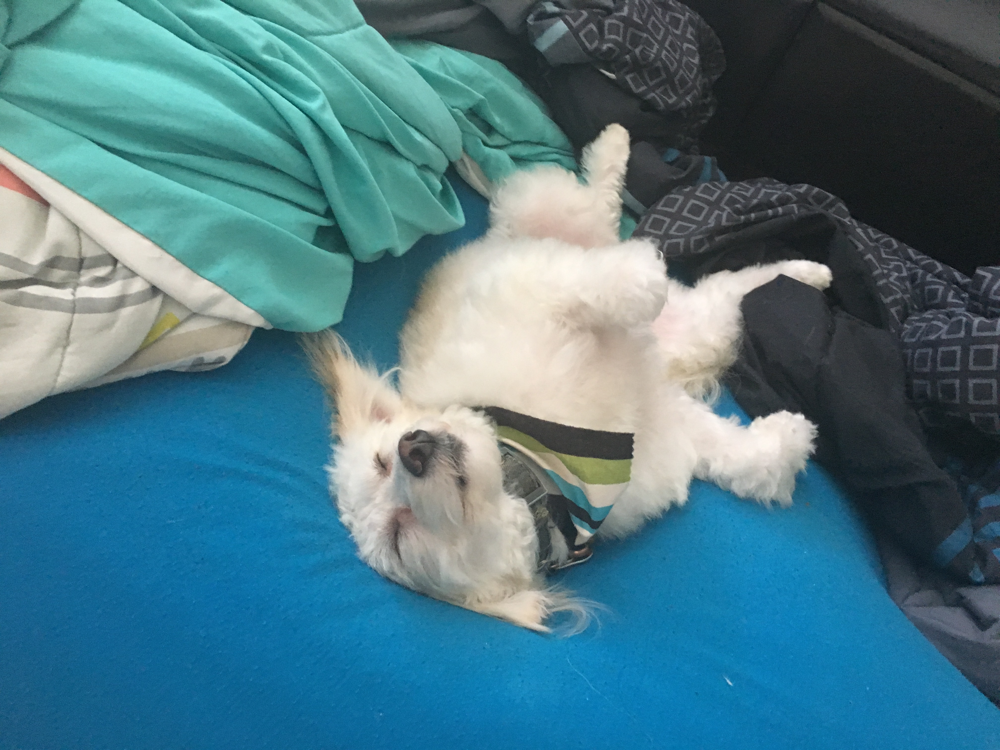
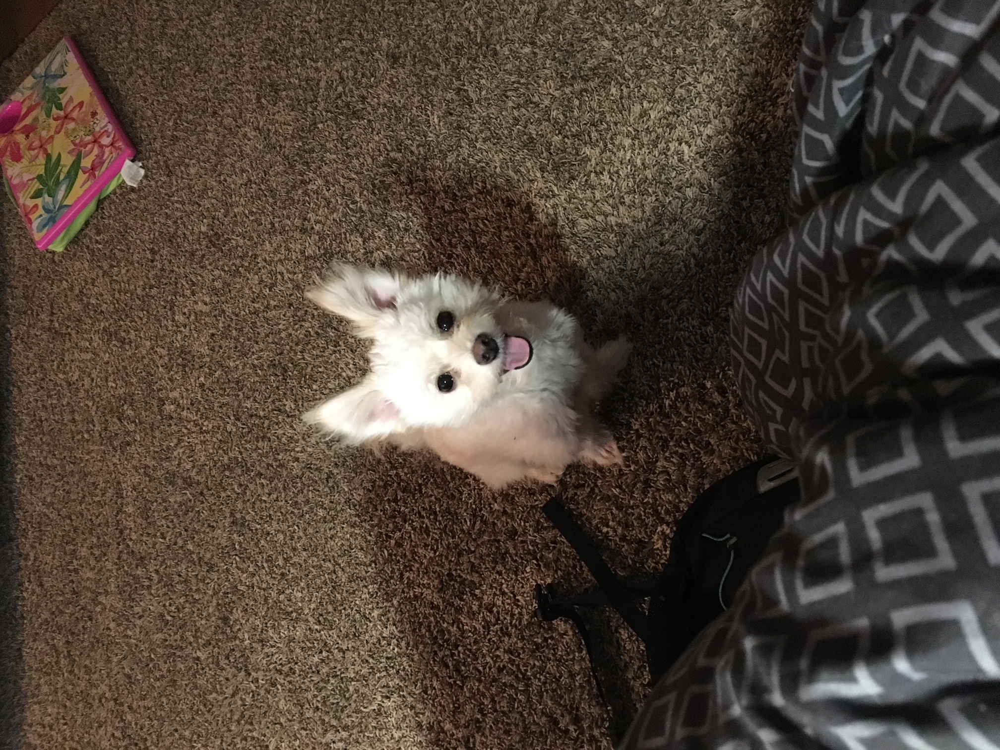
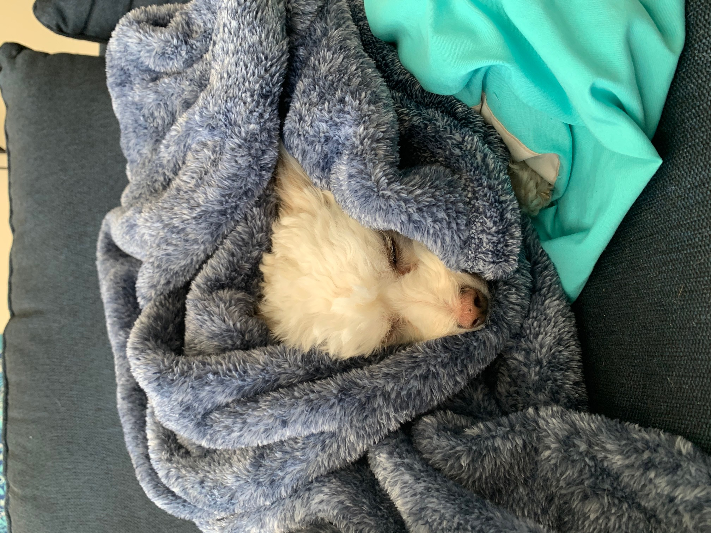

Soren has a little brother named Flynn

Soren love to sleep all day! Especially under his parents!

Soren was found in a pet shop in CT and costed ~$2000

Soren likes to pee so much that we call him Pee-ren. But he'll never go inside the house thankfully!